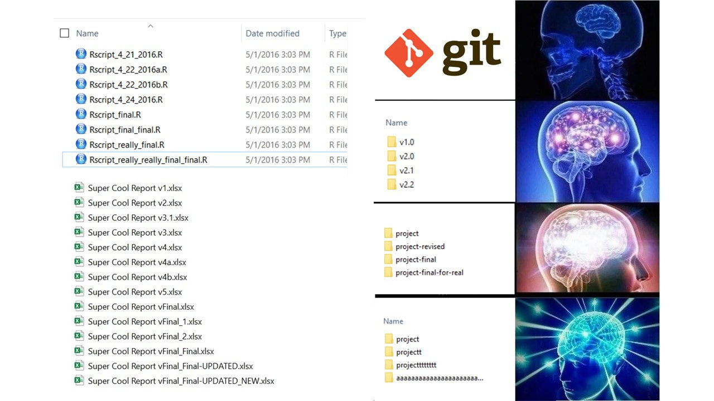
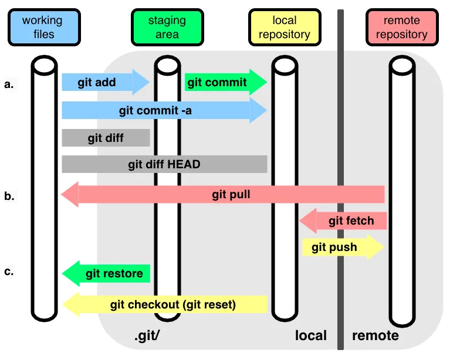
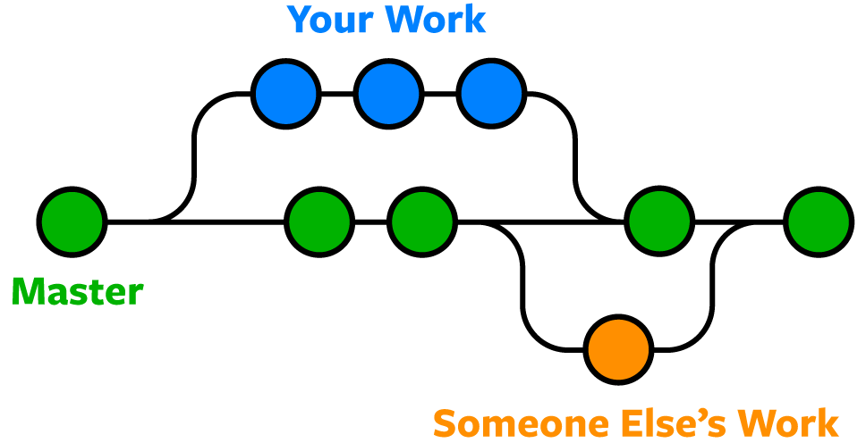
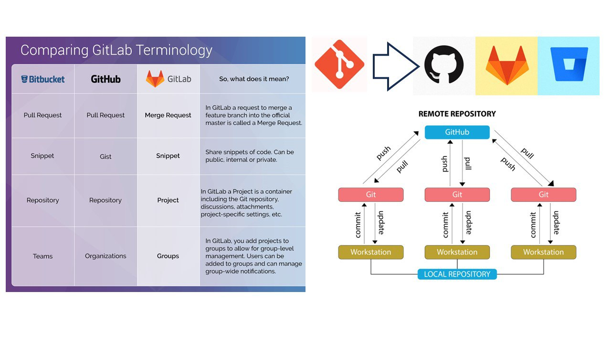
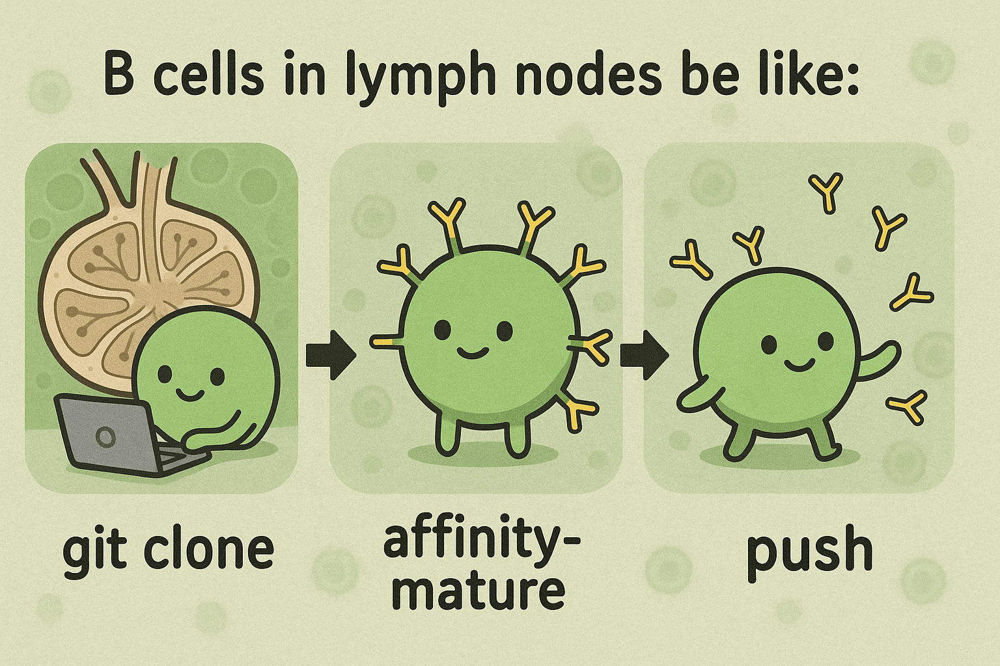
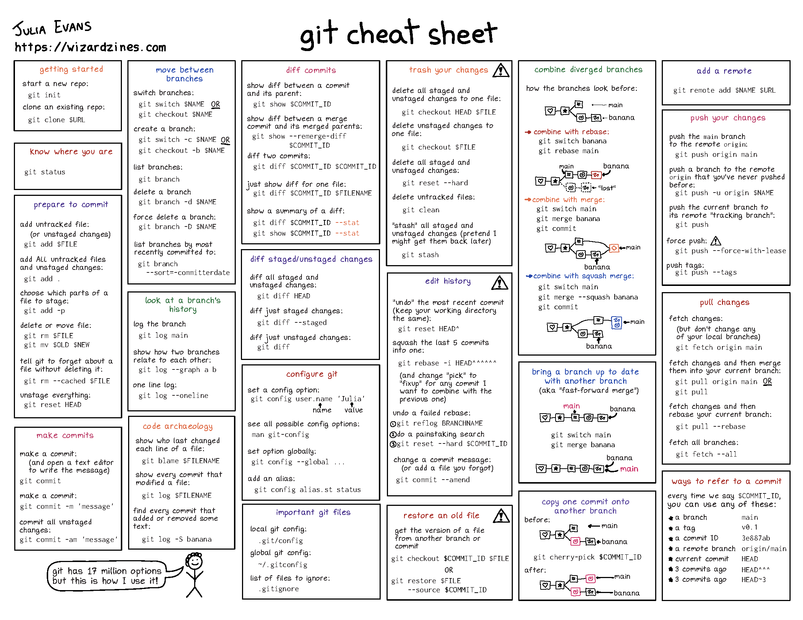

9 Integrated Platforms, Tools, and Technologies
9.1 Version Control: Git & GitHub

9.1.1 What is Version Control?
Imagine you’re writing a research paper. You make changes, save different versions, and sometimes want to go back to previous versions. Version control is like having a time machine for your files - it helps you track changes, collaborate with others, and maintain a history of your work.
Git was made by Linus Torvalds, the same person who made Linux! It is like a super-powered save system. Instead of saving files with names like paper_FINAL_final_UPDATED_NEW.docx or proj_NEW_LASTEST.R, Git keeps track of all changes automatically.
9.1.2 Basic Git Concepts & Commands
Repository (Repo): Think of it as a project folder that Git watches. Like a photo album that keeps track of all your project’s versions. Local repo is a copy of the remote repo on your computer. Remote repo can be the version stored on GitHub or GitLab.
Commit: Like taking a snapshot of your work. Each commit is a saved point you can return to. Like saving a checkpoint in a video game or giving your file a name/version.

- Branch: Like creating a parallel universe for your work. You can experiment without affecting the main project. Like writing a draft of your paper without changing the original. Also can be used to collaborate with others, simultaneously working on the same project! You can Merge your changes back to the main branch after you are done. Master/Main branch is the main branch of the repo.

# Start a new project (create a new repository)
git init
# Check the status of your files
git status
# Add files to be saved (staging)
git add filename.txt # Add specific file
git add . # Add all files
# Save your changes (commit)
git commit -m "Description of changes"
# See your project history
git log
# Reset your branch to the latest commit
git reset --hard9.1.3 GitHub: Your Project’s Home on the Internet

GitHub is like a social network for your code. It’s where you can store your projects online, collaborate with others and share your work with the world. GitHub has Repository Hosting - a cloud storage specifically for code, Issue Tracking - a to-do list for your project and bug reporting, Pull Requests - suggesting changes to someone else’s work or requesting changes to your own work, Code Review - peer review process for your code, and CI/CD features. Common workflows in GitHub: Fork a Repository: Like making a copy of someone else’s project. You can modify it without affecting the original. Push Changes: Like uploading your changes to GitHub. Clone a Repository: Like downloading a project to your computer.
# Clone a repository
git clone https://github.com/username/repository.git
# Get updates from remote repository
git pull
# Send your changes to remote repository
git push9.1.4 Common Scenarios and Best Practices
When working with Git, follow these key practices: write short & clear commit messages to document changes, create feature branches for new work, keep your local copy updated regularly, and review changes before committing. For beginners, start with basic commands and simple projects, you can utilize visual tools like GitHub Desktop or VS Code’s Git integration but I prefer to use the command line (more straightforward), learn from mistakes. Git maintains history so you can always revert!!
What usually happens daily:
Starting a New Project
git init git add . git commit -m "Initial commit"
- Note: I prefer to initialize a new repository in GitHub with a README file and LICENSE, and then clone it to my local machine.
Updating Your Work
git pull # Make changes git add . git commit -m "Description of changes" git pushWorking with Branches
git checkout -b new-branch-name # Make changes git add . git commit -m "Description of changes" git push git checkout main git merge new-branch-name

9.1.5 Learning resources
- git - the simple guide - no deep shit!
- Git Tutorial - Medium by Jaaeehoonkim
- The best and most reliable: Free book of Pro Git
- GitHub documentation
- YouTube and ChatGPT are your best friends!

9.2 DevOps for Bioinformatics
DevOps is a set of practices that combines software development (Dev) and operations (Ops) to improve collaboration and speed of delivery. Bioinformatitians need it to make their pipelines reproducible, scalable, and efficient.
9.2.1 Key Concepts
- Continuous Integration/Continuous Deployment (CI/CD)
- Infrastructure as Code (IaC)
- Container Orchestration
- Automated Testing
- Monitoring and Logging
- Reproducible Environments
9.2.2 Recommended Resources
- Tools and Software:
- Docker - Containerization
- Singularity - Container Platform for HPC
- Kubernetes - Container Orchestration
- GitHub Actions - CI/CD
- Terraform - Infrastructure as Code
- Prometheus - Monitoring
- Grafana - Visualization and Monitoring
- Learning Resources:
- Docker for Bioinformatics
- Bioconda - Package Management
- Bioconductor Docker - R/Bioconductor Containers
- BioContainers - Container Registry for Bioinformatics
9.2.3 Essential DevOps Skills for Bioinformaticians
- Containerization
- Creating reproducible environments
- Managing dependencies
- Building and sharing containers
- Example: Creating a Dockerfile for a bioinformatics pipeline
- Workflow Management
- Nextflow/Snakemake for pipeline automation
- Version control for workflows
- Example: Setting up a CI/CD pipeline for genomic analysis
- Infrastructure Management
- Cloud resource provisioning
- Cost optimization
- Example: Setting up a cloud-based analysis environment
- Monitoring and Logging
- Tracking pipeline performance
- Error handling and debugging
- Example: Setting up monitoring for a production pipeline
- Security Best Practices
- Data protection
- Access control
- Example: Implementing secure data transfer protocols
9.2.4 Common DevOps Workflows in Bioinformatics
Pipeline Development
# Example GitHub Actions workflow for testing a bioinformatics pipeline name: Pipeline Tests on: [push, pull_request] jobs: test: runs-on: ubuntu-latest steps: - uses: actions/checkout@v2 - name: Run Tests run: | docker build -t mypipeline . docker run mypipeline testEnvironment Management
# Example Dockerfile for a bioinformatics environment FROM continuumio/miniconda3 RUN conda install -c bioconda -c conda-forge \ bwa \ samtools \ bedtoolsInfrastructure as Code
# Example Terraform configuration for cloud resources resource "aws_instance" "bioinfo_server" { ami = "ami-0c55b159cbfafe1f0" instance_type = "t2.large" tags = { Name = "bioinfo-analysis-server" } }
9.2.5 Best Practices
- Version Control
- Use Git for all code and configuration
- Implement branching strategies
- Document changes thoroughly
- Testing
- Write unit tests for scripts
- Implement integration tests
- Use test data sets
- Documentation
- Maintain README files
- Document dependencies
- Keep changelogs
- Security
- Follow data protection guidelines
- Implement access controls
- Regular security audits
- Performance
- Monitor resource usage
- Optimize workflows
- Implement caching strategies
9.3 Workflow Management Systems
9.3.1 Key Concepts
- Pipeline Automation
- Reproducible Analysis
- Resource Management
- Parallel Processing
- Error Handling
9.3.2 Recommended Resources
- Tools and Software:
- Learning Resources:
9.3.3 Essential Workflow Management Skills
- Pipeline Design
- Modular workflow components
- Parameter management
- Error handling
- Example: Creating a Nextflow script for RNA-seq analysis
- Resource Optimization
- Parallel processing
- Memory management
- CPU utilization
- Example: Configuring resource allocation in workflows
- Integration with DevOps
- Containerization
- Version control
- CI/CD integration
- Example: Setting up automated testing for workflows
- Monitoring and Debugging
- Workflow execution tracking
- Error reporting
- Performance monitoring
- Example: Implementing logging and monitoring in workflows
9.3.4 Common Workflow Patterns
Data Processing Pipeline
# Example Nextflow script for data processing #!/usr/bin/env nextflow params.input = "data/raw/*.fastq.gz" params.outdir = "results" process PROCESS_DATA { input: path reads output: path "*.processed", emit: processed script: """ process_data.sh $reads > processed.txt """ } workflow { reads = Channel.fromPath(params.input) PROCESS_DATA(reads) }Parallel Analysis
# Example Nextflow script for parallel analysis #!/usr/bin/env nextflow process PARALLEL_ANALYSIS { input: path data output: path "*.results", emit: results script: """ analyze.sh $data > results.txt """ } workflow { data = Channel.fromPath("data/*.txt") PARALLEL_ANALYSIS(data) }
9.4 SaaS Platforms
9.4.1 Key Concepts
- Cloud-Based Bioinformatics Tools
- Web-Based Analysis Platforms
- Collaborative Research Environments
- Data Sharing and Management
- Workflow Automation
9.4.2 Recommended Resources
- Platforms:
- Galaxy - Web-based platform for data analysis
- BaseSpace - Illumina’s cloud platform
- DNAnexus - Cloud-based genomics platform
- Seven Bridges - Biomedical data analysis platform
- Learning Resources:
9.5 Cloud Computing and Data Management
9.5.1 Key Concepts
- Cloud Infrastructure (AWS, GCP, Azure)
- Containerization (Docker, Singularity)
- Workflow Management
- Data Storage and Transfer
- Cost Optimization
9.5.2 Recommended Resources
- Tools and Software:
- AWS Genomics CLI - Genomics on AWS
- Terraform - Infrastructure as Code
- Nextflow - Workflow Management
- S3FS - S3 File System
- Learning Resources:
9.6 High-Performance Computing (HPC)
9.6.1 Key Concepts
- Cluster Computing
- Parallel Processing
- Job Scheduling
- Resource Management
- Performance Optimization
9.6.2 Recommended Resources
- Tools and Software:
- Learning Resources:
9.7 Data Visualization Techniques
9.7.1 Key Concepts
- Scientific Visualization
- Interactive Dashboards
- Statistical Graphics
- Network Visualization
- 3D Visualization
9.7.2 Recommended Resources
- Tools and Software:
- Learning Resources:
9.8 Big Data Analysis
9.8.1 Key Concepts
- Distributed Computing
- Data Processing Frameworks
- Machine Learning at Scale
- Real-time Analytics
- Data Warehousing
9.8.2 Recommended Resources
- Tools and Software:
- Apache Spark - Distributed Computing
- Hadoop - Distributed Storage
- Dask - Parallel Computing
- Apache Kafka - Stream Processing
- Learning Resources: